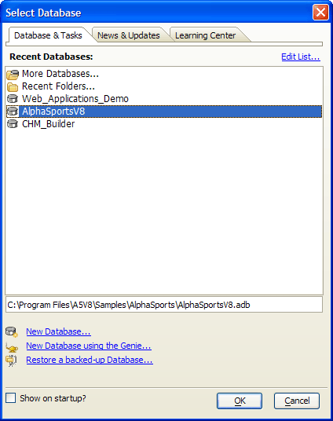
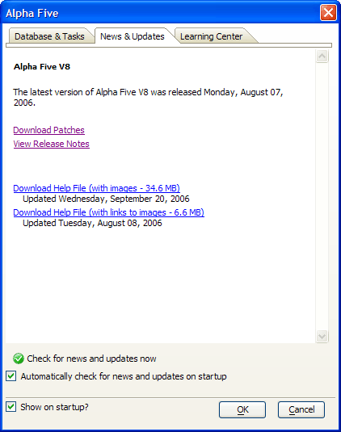

Select Database Dialog
The Select Database dialog appears when you start Alpha Five. Here you can select what you want to do, and quickly get started. The Databases &Tasks tab allows you to open or create a new database.

When you have no database open, you can display this dialog by clicking Recent Databases on the toolbar.
The entries at the top are typical menu commands for creating a new database and opening existing databases.
The Recent Databases list shows an editable scrolling list of the last 30 databases opened in Alpha Five. as you work with Alpha Five, your recently used databases will appear in this dialog. Double-clicking any entry under Recent Databases opens the selected database.
Clicking More Databases... displays the Open Database dialog, where you can search your computer for an existing database.
Clicking New Database... displays the Create New Database dialog, where you can specify a folder, a database name, then create a new database.
Clicking New Database Using the Genie... displays the New Database Genie dialog, where you can select a database template, specify a folder, then create a new database.
Clicking Restore a backed-up Database... displays the <span class=Screen>Restore Database</span> dialog, where you can select a database backup and restore it to its original folder.
This picture shows the News & Updates tab. If you have an Internet connection, the News tab will notify you of new patch releases. You can download patches and help files from this screen.

The News Tab
You can hide the Alpha Five dialog by clearing the Show at startup? check box.
See Also